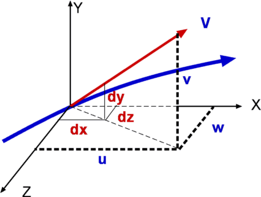
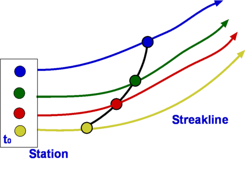
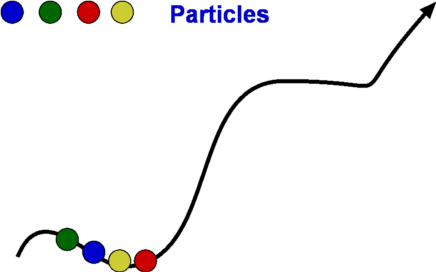

Integral Approach
Control Volume analysis of Fluid Flow
Basic Concepts
Velocity
Figure 1 : Velocity Field
The velocity field defines a distribution of velocity in a given region, R (Fig.1). It is denoted in a functional form as $V↖{→}(x,y,z,t)$. Velocity is a function of spatial and time coordinates. Fluid flow is assumed to be a continuum which allows velocity to be defined at a point. Velocity is a vector quantity, it has a direction along with a magnitude. Velocity field can be written as
$$V↖{→} = V↖{→}(u,v,w,t) $$
Velocity can have three components, one in each direction, u,v and w in x, y and z directions respectively and can vary with time t. It is usual to write $V↖{→}$ as
$$ V↖{→} = u.i↖{→} + v.j↖{→} + w.k↖{→} $$
Each of u,v and w can be functions of x,y,z and t.
$$ V↖{→} = u(x,y,z,t).i↖{→} + v(x,y,z,t).j↖{→} + w(x,y,z,t).k↖{→} $$
Most other variables involved in a fluid flow can also be given a field representation. We have temperature field, T(x,y,z,t), pressure field, P(x,y,z,t), density field, ρ(x,y,z,t), etc.
Steady and Unsteady Flows
Velocity, pressure and other properties of fluid flow can be functions of time. If a flow is such that the properties at every point in the flow do not depend upon time, it is called a steady flow.
For steady flows,
$$ {∂X}/{∂t} = 0 $$
where X is any property such as pressure, velocity or density. Thus X=X(x,y,z).
Unsteady or non-steady flow is one where the properties do depend on time.
Any flow start up process is unsteady. Many examples can be given from everyday life: eg. water flow out of a tap which has just been opened. This flow is unsteady to start with, but with time can become steady.
Some flows, though unsteady, become steady by choosing a particular frame of reference. These are called pseudosteady flows. On the other hand, a flow such as the wake behind a bluff body is always unsteady.
Unsteady flows are difficult to calculate while steady flows are less difficult having one degree less complexity.
One, Two and Three Dimensional Flows
The term one, two or three dimensional flow refers to the number of space coordinates required to describe the flow. Any physical flow is really three-dimensional, but using a full 3-D approach can be difficult to calculate. Simplifications may be possible if there is no flow variation in one or more of the spacial dimensions. The maths is simplified by ignoring changes to flow and spacial components for those directions were flow properties are remaining constant. It may be possible to reduce a three-dimensional problem to a two-dimensional one if flow is changing in only two directions or even a one-dimensional case if only changes in the stream direction are significant.
Figure 2 : Example of one-dimensional flow
Consider flow through a circular pipe. This flow is complex at the position where the flow enters the pipe. But as we proceed downstream the flow simplifies considerably and attains the state of a fully developed flow. A characteristic of this flow is that the velocity becomes invariant in the flow direction as shown in Fig 2. Velocity for this flow is given by
$$ u = u_{max}(1 - (r/R)^2) $$
Velocity at any location depends just on the radial distance r from the centreline and is independent of distance, x or of the angular position θ. This situation represents a typical one-dimensional flow.
In comparison, flow through a diverging duct as shown in Fig 3. varies in two directions. Velocity at any location depends not only upon the radial distance r but also on the x-distance. This is therefore a two-dimensional flow.
Figure 3: Example of a two-dimensional flow
The concept of a uniform flow as the boundary condition for analysing a fluid problem is very handy. A uniform flow is one where the velocity and other properties are constant independent of directions. It is assumed that at the boundaries of many problems, a uniform flow exists. E.g. at the entrance to a pipe, far away from a aerofoil or a motor car as shown in Fig. 4.
Figure 4 : Uniform Flow
Flow Description, Streamline, Pathline, Streakline and Timeline
Streamline, pathline, streakline and timeline form convenient tools to describe a flow and visualise it. They are defined below.
Figure 5 : Streamlines

Figure 6: Streamline definition
A streamline is a line that is tangential to the velocity vector at every point in the flow at a given instant of time. This definition leads to the equation for streamlines.
$$ {du}/u={dv}/v={dw}/w $$
where u,v, and w are the velocity components in x, y and z directions respectively.
Figure 7 : Streamtube
Due to its definition, a streamline has no flow across it; i.e. there is no flow normal to a streamline. Sometimes a bundle of streamlines is considered together inside a general flow for analysis. Such a bundle is called stream tube . If a coordinate axis is aligned along the stream tube then the flow in this axis system may be able to be analysed as one-dimensional.
Figure 8: Pathlines

Figure 9: Streaklines

Figure 10: Timeline
Pathline is the line traced by a given particle. This is generated by injecting a dye into the fluid and following its path by photography or other means (Fig.8). Streakline concentrates on fluid particles that have gone through a fixed station or point. At some instant of time the position of all these particles is marked and a line is drawn through them. Such a line is called a streakline (Fig.9). Timeline is generated by drawing a line through adjacent particles in flow at any instant of time. (Fig.10).
In a steady flow the streamline, pathline and streakline all coincide. In an unsteady flow they can be different. Streamlines are easily generated mathematically while pathline and streaklines are obtained through experiments.
Eulerian and Lagrangian approaches
Eulerian and Lagrangian approaches are the two methods to study fluid motion. The Eulerian approach concentrates on fluid properties at a point X(x,y,z,t). Thus it is a field approach. In the Lagrangian approach a particle or a group of particles is identified and followed with time. This is a cumbersome method, but there may be situations where it is unavoidable, such as in the two phase flow involving particles.
System and Control Volume
Figure 12 : Piston cylinder arrangement
The term system refers to a fixed mass with a boundary. With time the boundary of the system may change, but the mass remains the same. An example is that of a piston-cylinder arrangement as shown in Fig.12. A gas filled cylinder is closed by a piston at the right hand end. The volume of gas is a system. If the piston is now operated by pushing or pulling it the gas compresses or expands. The boundary of the system moves, but the mass does not cross the boundary as the system is a fixed mass. This definition does not prevent work or energy crossing the boundary.
Figure 13 : Complex System Approach
It is easy to analyse the system in the example of piston-cylinder arrangement, but in fluid dynamics there are systems which are far more complicated. For example, the flow about a moving vehicle. If a system is defined by taking a volume of air at time t0 then tracking this at various following points in time as the flow travels around the the vehicle, the system undergoes many changes as ilustrated in Fig. 13. The boundary changes rapidly and undergoes unmanageable distortions. The system approach is extremely difficult. Other complex examples are flow through turbomachinery, flow in hydraulic systems, etc.
Another method is the Control Volume, $ʊ$, approach. Here a "window" for observation of the flow is established. This is the control volume shown in Fig. 14. As compared to a system, a control volume has a fixed boundary. Mass, momentum and energy are allowed to cross the boundary. A balance of mass, momentum and energy that flow across the boundary and is caluclated and changes that take place to properties of flow within the control volume can be calculated. The shape of the control volume does not normally change. This is a more convenient approach and used for most fluid dynamic analysis.
Figure 14 : Control Volume, $ʊ$
Most problems consider the control volume to be fixed, but it is possible to have control volumes that change their boundary and deform. These lead to more complicated solution equations. Examples of such control volumes are shown in Fig.15.
Figure 15 : Moving and Collapsible Control Volumes
The boundary of the control volume is referred to as control surface.
The system and control volume approaches are akin to Lagrangian and Euler approaches respectively.
Differential and Integral Approachs
The Differential approach aims to calculate flow at every point in a given flow field in the form X(x,y,z,t). To determine the flow about an object using this approach, the properties of ρ,P, T, etc. are obtained everywhere within the region R, as shown in Fig.16. From the detailed knowledge of the flow field it is possible to predict features such as drag and lift. Flow around objects is complicated and usually requires the solution of the differential equations of motion. When geometry becomes complex, this approach becomes difficult and calls for computational fluid dynamics methods to be used.
Figure 16: Differential and Integral approaches to calculate flow about an Aerofoil.
It is not always necessary to get a detailed set of information of the flow. A large control volume can be created to encompass the region R and calculate the overall features like drag and lift by studying what happens at the boundary of the control volume, i.e., at the control surface. This procedure is called the Integral approach.
Integral Equations
Basic Laws for Fluid Flow
There are three simple laws governing fluid flow. They are the conservation laws for mass, momentum and energy. All fluid systems are covered by these laws.
Conservation of Mass
Consider a system of a fixed mass, m, as shown in Fig 17. This mass does not change. The law of conservation of mass can be stated as,
$$ m_{system} = \text"constant" $$Figure 17: A System
If mass is constant, then it does not change over time, so that,
$$ ( {dm}/{dt} )_{system} = 0 \text" with " m_{system} = ∫_{system} dm = ∫_{system} ρ. dʊ $$
Newton's Second Law of Motion
Newton's second law is the next one to be imposed upon fluid motion. It is known that the rate of change of momentum is proportional to the applied force. If F is the force upon a system,
$$ F ={dM}/{dt} $$
where M is the linear momentum. Here,
$$ M = ∫_{system} V.dm = ∫_{system} Vρ.dʊ $$
Momentum M and velocity V are vectors and each has a component in each of the coordinate directions. Accordingly, the above vector equation represents three scalar equations.
This law is also true for angular momentum (H). If a torque T acts upon the system, then,
$$ T = {dH}/{dt} $$
$$ H = ∫_{system} (r × V) .dm = ∫_{system} (r × V)ρ.dʊ $$
which again is a vector equation. Torque T can be due to body forces and/or surface forces. In addition there can also be torque directly introduced into the system such as through a mechanical shaft connected to the system.
Conservation of Energy
The first law of thermodynamics which is a statement of the conservation of energy principle states,
$$dQ-dW=dE$$
$$\text"i.e. "{dQ}/{dt}-{dW}/{dt}={dE}/{dt}$$
where dQ is the heat added to the system, dW is the work done by the system and dE is the consequent change in energy of the system.
In addition,
$$E_{system}= ∫_{system} e.dm = ∫_{system} eρ.dʊ $$
Energy (e) is a sum of internal energy (u), kinetic energy (KE) and potential energy (PE). Thus
$$e = u + V^2/2+gz$$
Second Law of Thermodynamics
While the first law of thermodynamics states that energy is conserved, the second law establishes a direction in which a process can take place. If dS is the change in entropy and dQ is the heat added and T the temperature,
$$ds≥{dQ}/T$$
In addition to the above relations we may need an equation of state, P = P(ρ,T).
Reynolds Transport Theorem
The method of applying these conservation laws in a control volume approach is called the Reynolds Transport Theorem.
Starting with a system and the rate at which an extensive property N changes in it, this can be expressed in terms of a corresponding intensive property, η, associated with the control volume, which initially coincides with the system.
Demonstration of the theorem for one-dimensional flow
Consider a stream tube in an one-dimensional flow. The flow takes place entirely through the stream tube and there is no flow across it, i.e., no flow in a direction normal to the stream tube. Consider the system S in the flow. A control volume CV is defined coincident with S at time t0 (Fig.18). The system has a fixed mass and is allowed to move and deform. On the other hand the control volume has fixed a boundary, which is denoted as CS. In this analysis the CV is stationary. After the lapse of time Δt i.e., at time t0+Δt, the control volume remains at the same position, I+II while the system has moved to occupy the new position II + III. During the time interval mass contained in region I has entered the control volume and mass in III has left the control volume.
Figure 18: Control Volume and system for an one-dimensional flow
Consider an extensive property N associated with the control volume. By definition we have,
$${dN_s}/{dt} = lim_{Δt→0}({N_s(t_0+Δt)-N_s(t_0)}/{Δt})$$
where subscript s denotes a system.
$$N_s(t_0+Δt)=(N_{II}+N_{III}) \text" at "t=t_0+Δt$$
$$N_s=(N_{cv}-N_{I}+N_{III}) \text" at "t=t_0+Δt$$
On substituting these into the above and noting that at t0 the system and the control volume coincide, i.e., $N_s(t_0)=N_{cv}(t_0)$, produces,
$${dN_s}/{dt}=lim_{Δt→0}({(N_{cv}-N_I+N_{III})(t_0+Δt)-N_{cv}(t_0)}/{Δt}) $$
By readjusting the terms,
$${dN_s}/{dt}=lim_{Δt→0}({N_{cv}(t_0+Δt)-N_{cv}(t_0)}/{Δt})+lim_{Δt→0}({N_{III}(t_0+Δt)}/{Δt})-lim_{Δt→0}({N_{I}(t_0+Δt)}/{Δt})$$
Each of the three limits on the RHS of the above equation can be simplified.
The first limit gives,
$$lim_{Δt→0}({N_{cv}(t_0+Δt)-N_{cv}(t_0)}/{Δt})= {∂N_{cv}}/{dt}={∂}/{dt}∫_{cv} ηρ.dʊ$$
where N is an extensive property and η is the corresponding intensive property such that N= ηm where m is the mass given by ρ times volume, i.e, $ρ×ʊ$.
The second limit, which gives the rate of change of N within III is
$$lim_{Δt→0}{N_{III}(t_0+Δt)}/{Δt}=lim_{Δt→0}({ηρʊ}/{Δt})(t_0+Δt) $$
The right hand side is simply the rate at which N is going out of the control volume though the boundary (the control surface) at right hand side and is equal to $(ηρAV)_{out}$
where A is the area of cross section of III, V is the velocity normal to the area.
Similarly we have for I, the rate at which N enters the control volume through the boundary or control surface at left hand side, $(ηρAV)_{in}$
Upon substituting,
$${dN_s}/{dt}={∂}/{dt}∫_{cv}ηρ.dʊ+(ηρAV)_{out}-(ηρAV)_{in}$$
This is the Reynolds Transport equation for the control volume considered. It represents
|
LHS: Rate of change of property N within the system = |
RHS: Rate of change of property N within the control volume + Rate of outflow of property N through the control surface - Rate of inflow of property through the control surface. |
The above result can be generalised to any control volume of any shape, but fixed in space. A general control volume is shown in Fig 19. For this control volume it is best to consider the net flow of property N into the control volume rather than defining specific boundaries.. Accordingly, the above is written as
|
LHS: Rate of change of property N within the system = |
RHS: Rate of change of property N within the control volume + Net rate of change of property N through the control surface |
Figure 19: General Control Volume and System
Whether the flow at any small area of control surface is an inflow or an outflow is decided by the direction of the velocity vector and that of the area vector at that segment. For a small area $dA$ at the control surface (Fig.19), the velocity acting at that point will be $V↖{→}$. The rate at which property N escapes or enters the control volume through $dA$ depends upon the velocity component normal to $dA$, $V↖{→}×dA$. In fact the rate of flow of N through $dA$ is given by $ηρV↖{→}×dA$.
Integrating this for the entire control surface gives the net rate of flow of N into the control volume, $∫_{cs} ηρV↖{→}×dA$
Consequently, the Reynolds Transport theorem for a general control volume can be written as
$${dN_s}/{dt}={∂}/{dt}∫_{cv} ηρ.dʊ + ∫_{cs} ηρV↖{→}×dA$$
This equation can be simplified when specific control volumes are considered.
Conservation of Mass
The Reynolds Transport theorem can be applied to derive an equation for conservation of mass. We note that in the equation, N is the extensive property of interest which now is mass m. The corresponding intensive property is
$$ η=N/m=m/m=1 $$
Substitute for m and η gives
$$ {dm}/{dt}={∂}/{∂t}∫_{cv}ρ.dʊ+∫_{cs}ρV↖{→} × dA $$
By definition, a system is an entity of fixed mass, the left hand side of the above equation is zero, thus giving the equation for conservation of mass as
$$ {∂}/{∂t}∫_{cv}ρ.dʊ+∫_{cs}ρV↖{→} × dA =0$$
which expresses that the rate of accumulation of mass within a control volume is equal to the net rate of flow of mass into the control volume. This equation is also called the Continuity Equation.
Steady Flow
For a steady flow the time derivative in the equation vanishes. As a result,
$$ ∫_{cs}ρV↖{→} × dA =0$$
In addition if the flow is incompressible, ρ= constant and we have
$$ ∫_{cs}V↖{→} × dA =0$$
Incompressible Flow
The equation simplifies further when we consider an incompressible flow where density ρ is a constant. Consequently,
$$ ρ{∂}/{∂t}∫_{cv}dʊ+ρ∫_{cs}V↖{→} × dA =0$$
Dividing by density, ρ,
$$ {∂}/{∂t}∫_{cv}dʊ+∫_{cs}V↖{→} × dA =0$$
The first term is the rate of change of volume within a control volume, which for a fixed control volume is zero by definition. This gives a simple form of the equation for the conservation of mass for the control volume as
$$ ∫_{cs}V↖{→} × dA =0$$
Thus for an incompressible flow the continuity equation is the same irrespective of whether the flow is steady or unsteady.
$V↖{→}× dA$
This $V↖{→}× dA$ term appears in almost all the equations for a control volume analysis - mass, momentum and energy. Its sign convention must be clearly defined. Consider any part of a control surface and let the area be dA. Let the velocity vector acting on it be $V↖{→}$. We are interested in the velocity normal to the area that is convecting the mass, momentum or energy. This is given by $n↖{→}.V↖{→}$. Thus in scalar terms,
$$ V↖{→}×dA = V \cos(α).dA $$
where α is the angle between area vector (normal to surface) and velocity vector.
A negative $V↖{→}×dA$ suggests an inflow into the control volume while a positive $V↖{→}×dA$ is an outflow from the control volume.
Application to a one-dimensional control volume
Consider an one-dimensional stream tube flow as shown in Fig.20. The control volume is bounded by surface 1, an inlet, and surface 2, an outlet and the connecting streamtube S through which there is no flow. There is inflow/outflow of mass only through the two labelled surfaces.
Figure 20 : Control Volume for an one-dimensional steady flow
If a uniform flow prevails at surfaces 1 and 2, with velocities V1 and V2 and areas of cross section, A1 and A2, then the application of continuity gives
$$ ∫_{cs}ρV↖{→}×dA=∫_{1}ρV\cos(180).dA+∫_{2}ρV\cos(0).dA=-∫_{1}ρV.dA+∫_{2}ρV.dA=0 $$
as flow properties are constant over the areas this simplifies to
$$ρ_{1}V_{1}A_{1}=ρ_{2}V_{2}A_{2} $$
Momentum Equation
A momentum equation resulting from the Reynolds Transport theorem can also be derived. Now, $N=M↖{→}$ where $M↖{→}$ is the momentum. Note that momentum is a vector quantity and that it has a component in every coordinate direction. Thus,
$$ N=M \text" and "η={M↖{→}}/m=V↖{→} $$
Consider the left hand side of Reynolds Transport equation. ${dM↖{→}}/{dt}$ is proportional to the applied force as per Newton's Second Law of motion. Thus,
$${dM↖{→}}/{dt}=F↖{→}$$
Where $F↖{→}$ is again a vector and includes both body forces, $F_B↖{→}$ and surface forces, $F_S↖{→}$. Thus,
$${dM↖{→}}/{dt}=F_B↖{→}+F_S↖{→} $$
Now substitute for η in the right hand side of the equation giving,
$$F_B↖{→}+F_S↖{→}={∂}/{∂t}∫_{cv}ρV↖{→}.dʊ+∫_{cs}V↖{→}ρV↖{→} ×dA $$
Writing this as three equations, one for each coordinate direction,
\[\table F_{Bx}↖{→}+F_{Sx}↖{→}= {∂}/{∂t}∫_{cv}ρu.dʊ+∫_{cs}uρV↖{→}×dA ; F_{By}↖{→}+F_{Sy}↖{→}= {∂}/{∂t}∫_{cv}ρv.dʊ+∫_{cs}vρV↖{→}×dA ; F_{Bz}↖{→}+F_{Sz}↖{→}= {∂}/{∂t}∫_{cv}ρw.dʊ+∫_{cs}wρV↖{→}×dA ;\]
The term $uρV↖{→}×dA$ represents the u momentum that is convected in/out through the surface dA in a direction normal to it. In fact momentum in other directions can also be convected out from the same area. These are given by $vρV↖{→}×dA$ and $wρV↖{→}×dA$.
As stated before the term $ρV↖{→}×dA$ is replaced by $ρV\cos(α).dA$ to account for the angle between the normal to the surface and the direction of the flow. This equation set is used in numerous applications in fluid dynamics, such as force at the bending of a pipe, thrust developed at the foundation of a rocket nozzle, drag about an immersed body etc.
Bernoulli Equation
The momentum equation leads to the development of the Bernoulli Equation, named after Bernoulli (1738). This equation basically connects pressure at any point in flow with velocity. It is one of the widely used equations in fluid dynamics to calculate pressure with the knowledge of velocity.
A differential stream tube within a flow with a defined small control volume within it is shown in Fig.21. Any flow takes place only along the streamtube and through the ends of it. The flow is therefore one dimensional in nature and takes places in a direction s along the stream tube. Accordingly, the velocity is denoted by Vs. There is no flow across the tube. The length of the stream tube is ds.
Figure 21: Differential Control Volume for an one-dimensional steady flow
Since it is a small stream tube any property changes only vary slightly in direction s. The area, velocity, density and pressure at the left hand end i.e., the inlet end, (1) are set as A, Vs, ρ and P. Assuming the flow is incompressible, then at outlet end (2), the corresponding properties will be A+dA, Vs+dVs, ρ+dρ and P+dP.
Applying the momentum equation to the above differential control volume will provide a detailed solution to the problem. First a list of the assumptions made is required.
Assumptions
- A stream tube with no cross flow considered.
- The flow is steady, ${∂}/{∂t}=0$
- Fluid is incompressible ( ρ = constant, dρ = 0).
Any application of the momentum equation should be preceded by the Continuity Equation. Complete information about the flow cannot be obtained by applying the momentum equation alone.
Application of Continuity Equation
$${∂}/{∂t}∫_{cv}ρ.dʊ+∫_{cs}ρV_s↖{→}×dA=0 $$
The first term in the equation cancels out because of the steady flow assumption. Since all the flow takes place through surfaces (1) and (2) the remaining term reduces to
$$-ρV_sA+ρ(V_s+dV_s)(A+dA)=0$$
giving
$$ρ(V_s+dV)(A+dA)=ρV_sA={dm}/{dt}$$
where ${dm}/{dt}$ is the mass flow rate through the control volume.
Application of Momentum Equation
From the momentum equation,
$$F_{Bs}↖{→}+F_{Ss}↖{→}={∂}/{∂t}∫_{cv}V_s.dʊ+∫_{cs}V_sρV_s↖{→}×dA$$
Since the flow is steady, the first term on the RHS drops out. Body forces FBs and surface forces FSs acting on the control volume need to be evaluated.
Body Forces
The only body force acting is the weight of the fluid within the control volume. Accordingly, in the s direction,
\[\table F_{Bs}, =,-dW \sin(θ); , =,-(dm)g \sin(θ); , =,-(ρdʊ)g \sin(θ); , =,-(ρds(A+{dA}/2))g \sin(θ); , =,-ρg(A+{dA}/2)dz; F_{Bs}, =,-ρgAdz \]
Surface Forces
The surface force is due to pressure acting upon the boundaries of the control surface. There are three terms that contribute - end (1), end (2) and the bounding surface of the stream tube. Force on each of these is given by the product of pressure and area. For the bounding surface this force is the product of an average pressure, $1/2(P+(P+dP))=P+{dP}/2$ multiplied by the effective area, dA. Thus for the surface forces,
\[\table F_{Ss}, =, PA-(P+dP)(A+dA)+(P+{dP}/2)dA; , =, PA-PA-PdA-AdP-dPdA+PdA+{dP}/2dA; , =, -AdP - {dPdA}/2; F_{Ss}, =, -AdP \]
Terms from the Right Hand Side integrations
$$-V_sρAV_s+(V_s+dV_s)ρ(A+dA)(V_s+dV_s)$$
substituting for ρ(A+dA)(Vs+dVs) from continuity, RHS =
$$-V_sρAV_s+(V_s+dV_s)ρAV_s = ρAV_sdV_s$$
Now equating terms from the LHS and RHS,
$$ρAV_sdV_s=-ρgA{dz}- A{dP} $$
i.e.,
$$V_sdV_s+ gdz+{dP}/ρ=0$$
i.e.,
$$d({V_s^2}/2)+gdz+{dP}/ρ=0$$
The above equation is readily integrated for an incompressible flow ( ρ = constant). As a result,
$$P/ρ+{V_s^2}/2+gz = \text"constant"$$
This equation is called the Bernoulli Equation. Note that it connects pressure (P), elevation (z) and velocity (Vs). The equation is valid along a streamline and we can drop the subscript s as velocity is always in the direction of local streamlines. This gives,
$$P/ρ+{V^2}/2+gz = \text"constant"$$
This equation is valid for steady flows only in absence of any friction such as forces due to viscosity and the flow must be incompressible.
Application to moving Control Volumes
The continuity and the momentum equations can be extended to cases where the control volume is not fixed in space. One such case is when the control volume is moving with a constant velocity, say an aircraft or a ship moving at a constant speed. Note that the equations derived assume that the speeds are all referred to the control volume. So it becomes a simple matter to consider a control volume moving at a constant speed, Vcv. Define
$$V_{rel}=V-V_{cv}$$
which now is the speed relative to the control volume. The equation for Reynolds Transport theorem, gets altered to
$$ {dN_s}/{dt}={∂}/{∂t}∫_{cv}ηρ.dʊ+∫_{cs}ηρV_{rel}↖{→} ×dA$$
Equation for Angular Momentum
Many flow devices and turbo-machinery involve rotating components. Examples are Centrifugal pumps, Turbines and Compressors. The analysis of such systems is facilitated by the Reynolds Transport theorem written for angular momentum.
$$T={dH}/{dt}$$
where,
$$ H=∫_{system}(r↖{→} ×V↖{→}).dm=∫_{system}(r↖{→}×V↖{→})ρ.dʊ$$
It becomes necessary now to calculate the angular momentum about some point, say O. Then,
$$N=H_O\text" and "η={dH_O}/{dm}=r↖{→}×V↖{→}$$
Substitution into the equation for Reynolds theorem gives,
$${dH_{Os}}/{dt}={∂}/{∂t}∫_{cv}(r↖{→}×V↖{→})ρ.dʊ+∫_{cs}(r↖{→}×V↖{→})ρV↖{→}×dA$$
The LHS of the above equation is the sum of all the moments about the point O, ie. $Σ(r↖{→}×F↖{→})$. Accordingly,
$$Σ(r↖{→}×F↖{→})={∂}/{∂t}∫_{cv}(r↖{→}×V↖{→})ρ.dʊ+∫_{cs}(r↖{→}×V↖{→})ρV↖{→}×dA$$
Deformable Control Volumes and Control Volumes with non-inertial acceleration
It is possible to extend this analysis to the general cases of deformable control volumes and those that undergo acceleration, but these are beyond the scope of this text.
Energy Equation
The Reynolds Transport theorem can also be used to derive an equation for energy conservation in a control volume. Now,
$$N=E\text" and "η=E/m=e$$
On the LHS we have ${dE}/{dt}$, which from the First Law of Thermodynamics is
$${dE}/{dt}={dQ}/{dt}-{dW}/{dt}$$
Where ${dQ}/{dt}$ is the rate at which heat is added to the system and ${dW}/{dt}$ is the rate at which work is done on/by the system.
Substituting,
$${dQ}/{dt}-{dW}/{dt}={∂}/{∂t}∫_{cv}eρ.dʊ+∫_{cs}eρV↖{→}×dA$$
In the above equation, e should include all forms of energy - internal, potential, kinetic and others. The others category will include nuclear, electromagnetic and other sources of energy. For simple fluid flows these are not important. Fields such as Magneto Hydrodynamics and Relativistic Fluid Dynamics will involve these additional forms of energy.
For simple fluids,
$$e=u+gz+1/2V^2$$
There are different modes of performing work - shaft work, Ws, work done by pressure, Wp , and work due to shear forces on the control surface. Shaft work includes any work that is directly added to the system by means of a pump, piston etc. Work done by pressure is calculated as
$$d({dW}/{dt})=-PdAV_n=PV.dA$$
where dA is an elemental area over the control surface, the velocity Vn is assumed to be directed into the control volume (hence gets a negative sign). This equation is integrated over the control surface to obtain the total work due to pressure. Thus,
$${dW_P}/{dt}=∫_{cs}PV↖{→}×dA$$
Work due to shear forces is small and is usually neglected. Heat added ${dQ}/{dt}$ becomes important only in problems involving heat transfer. Upon substituting for various terms,
\[\table {dQ}/{dt}-{dW_s}/{dt}-{dW_P}/{dt}, =,{∂}/{∂t}∫_{cv}(u+gz+1/2V^2)ρ.dʊ+∫_{cs}(u+gz+1/2V^2)ρV↖{→}×dA; {dQ}/{dt}-{dW_s}/{dt}-∫_{cs}PV↖{→}×dA, =,{∂}/{∂t}∫_{cv}(u+gz+1/2V^2)ρ.dʊ+∫_{cs}(u+gz+1/2V^2)ρV↖{→}×dA; {dQ}/{dt}-{dW_s}/{dt}, =,{∂}/{∂t}∫_{cv}(u+gz+1/2V^2)ρ.dʊ+∫_{cs}(u+gz+1/2V^2+P/ρ)ρV↖{→}×dA; , =,{∂}/{∂t}∫_{cv}(u+gz+1/2V^2)ρ.dʊ+∫_{cs}(h+gz+1/2V^2)ρV↖{→}×dA;\]
where h is specific enthalpy given by $u+P/ρ$. The final equation is the general form of the Energy Equation for a control volume.
Energy equation for a one-dimensional control volume
Figure 22 : Control Volume for a one-dimensional steady flow
Consider the one-dimensional control volume shown in Fig 22. The velocity, density, pressure and other variables are assumed to be uniform across the ends,
Note that for continuity, $(ρAV)_1=(ρAV)_2={dm}/{dt}$
$${dQ}/{dt}-{dW}/{dt}=-{dm}/{dt}{(h+gz+1/2V^2)}_1+{dm}/{dt}{(h+gz+1/2V^2)}_2$$
On division by ${dm}/{dt}$ and denoting ${{dQ}/{dt}}\/{{dm}/{dt}}$ by q and ${{dW}/{dt}}\/{{dm}/{dt}}$ by ws, rearrangement of terms,
$${(h+gz+1/2V^2)}_1={(h+gz+1/2V^2)}_2 - q + w_s $$
Note that the term $(h+gz+1/2V^2)$ is equal to the Total Enthalpy denoted by H0. Accordingly the equation becomes
$$H_{O1}=H_{O2}-q+w_s$$
The total enthalpy of a control volume is conserved unless heat or work is added to or taken out of the control volume.
Low Speed Application
In low speed applications, it is usual to express energy as a Head, with each of the terms in the above equation having the units of a length. This is done by dividing the equation throughout by g. Thus,
$${(u/g+P/{ρg}+z+V^2/{2g})}_1={(u/g+P/{ρg}+z+V^2/{2g})}_2-q/g+{w_s}/g$$
or
$${(u/g+P/γ+z+V^2/{2g})}_1={(u/g+P/γ+z+V^2/{2g})}_2-h_q+h_s$$
The term $P/γ$ is called the Pressure Head and $V^2/{2g}$ the Velocity Head. Terms hq and hs represent the heat added and shaft work converted to "head" units.
If we consider a simple pipe flow without the shaft work then the equation becomes
$${(P/γ+z+V^2/{2g})}_1={(P/γ+z+V^2/{2g})}_2+{u_2-u_1-q}/g_s$$
The terms within the parenthesis are called the Total Head or Available Head. Normally in a flow some available head is lost because of friction and heat transfer. It is a common practice to use the above equation in the following form,
$${(P/γ+z+V^2/{2g})}_1={(P/γ+z+V^2/{2g})}_2-h_{friction}-h_{pump}+h_{turbine}$$
The losses that take place between "inlet" i.e., (1) and "outlet" i.e., (2) are obtained through measurements and imperical correlations.
Relationship between Energy Equation and Bernoulli Equation
An examination of these equations brings out the connection between the Energy equation and the Bernoulli equation. It is clear that two equations become one when losses that occur between (1) and (2) are ignored.
Bernoulli Equation can be used only when considering a frictionless flow along a streamline. Further it is required that the flow be incompressible without any addition of heat or shaft work.
Bernoulli Equation for Aerodynamic Flow
In aerodynamics, considerably higher speeds are dealt with. An aircraft flies at speeds of the order of 500 kmph and more, while river flows or household pipe flows may only involve 10 kmph or so. Consequently, the kinetic energy term for aerodynamic flows is very large when compared to the potential energy. Accordingly, it is usual to neglect potential energy for such flows. The Bernoulli Equation as a consequence becomes,
$$P+1/2ρV^2=\text"constant"$$
Stagnation Pressure
Figure 23 : Stagnation Point on (a) Simple Body and (b) a complicated Body
The Bernoulli equation can be applied to flow about a body such as an aircraft as shown in Fig 23. Let 1-s be a streamline that passes through the stagnation point of the flow, i.e., the point where the flow is brought to rest or where the velocity is zero. Assuming constant density and no losses then applying the Bernoulli equation along 1-s gives,
$$P_1+1/2ρV_1^2=P_2+1/2ρV_2^2=\text" ... "=P_s+1/2ρV_s^2$$
where Ps and Vs are the pressure and velocity at the point s. It is known that Vs= 0. Therefore,
$$P_1+1/2ρV_1^2=P_2+1/2ρV_2^2=\text" ... "=P_s$$
Ps is referred to as Stagnation Pressure. It is the maximum pressure experienced by the fluid. It becomes a very convenient constant for the Bernoulli Equation for aerodynamics flows. It is the pressure experienced by the fluid when it is brought to rest. The kinetic energy of the upstream fluid is converted into pressure as a consequence of the fluid being brought to rest.
The term "P" is the pressure seen by the moving fluid and is referred to as Static Pressure.
Energy Grade Line
Terms Energy Grade Line and Hydraulic Grade Line are frequently used by hydraulic engineers. Each of the terms of the Bernoulli equation can be expressed as a head. In absence of work and heat transfer,
$$z_1+{P_1}/γ+{V_1^2}/{2g}=z_2+{P_2}/γ+{V_2^2}/{2g}=\text" ... "=H$$
where term H is not to be mistaken for enthalpy and is to be taken as the total head. If the above equation is graphed, the total energy value is a constant and represented by a horizontal line as shown in Fig 24 and is called the Energy Grade Line. One other line that is defined is the Hydraulic Grade Line, which is the Energy Grade Line subtracting the velocity head (i.e., V2/2g).
Figure 24: Energy Grade Line (EGL) and Hydraulic Grade Line (HGL) for an one-dimensional flow.
If the losses are taken into account the EGL will drop accordingly. Any work extraction along the path, such as via a turbine, will be seen as a sudden drop in the EGL. Any work addition will be reflected as a sharp rise. HGL follows similar trends.
Kinetic Energy Correction Factor
It is assumed in the derivation of Bernoulli equation that the velocity at the end sections (1) and (2) is uniform, but in practical situations this may not be the case and the velocity can vary across the inlet or exit cross sections. A solution for handling this additional complexity is to use a correction factor for the kinetic energy term in the equation. If $V_{avg}$ is the average velocity at an end section then, for energy,
$$∫_A {V^2}/2ρV.dA=α{dm}/{dt}{V_{avg}^2}/2$$
After simplification,
$$α=1/A∫_A{(u/V_{avg})}^3 .dA$$
Consequently,
$${(P/γ+z+α_1 V^2/{2g})}_1={(P/γ+z+α_2 V^2/{2g})}_2-h_{friction}-h_{pump}+h_{turbine}$$
where α is the Kinetic Energy Factor. Its value for a fully developed laminar pipe flow is around 2, whereas for a turbulent pipe flow it is between 1.04 to 1.11. It is usual to take it is 1 for a turbulent flow. It should not be neglected for a laminar flow.